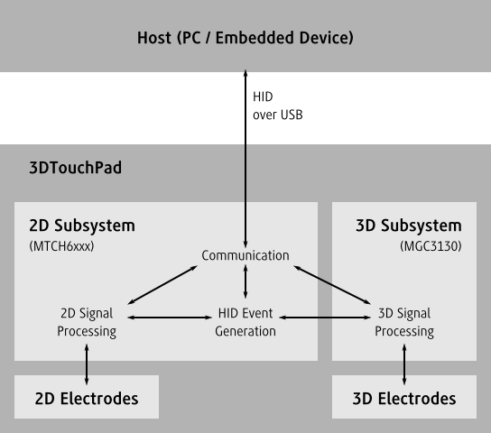

| API Usage | |
| When to use the 3DTouchPad SDK | The HMI API provides a synchronous high-level communication with the 3DTouchPad devices. |
| Limitations of the HMI API | The SDK currently doesn’t directly support writing applications that require asynchronous communication with immediately returning functions. |
| 3DTouchPad Usage | The 3DTouchPad could be configured to disable most of its features or to not communicate the result of its processing. |
The HMI API provides a synchronous high-level communication with the 3DTouchPad devices. It is portable to different platforms.
| Limitations of the HMI API | The SDK currently doesn’t directly support writing applications that require asynchronous communication with immediately returning functions. |
The 3DTouchPad could be configured to disable most of its features or to not communicate the result of its processing. This allows to reduce the required bandwidth and to do adaptions to the behavior of the device.
The following is an abstract representation of the individual features of the device during its normal operation:
The use of the 2D and 3D sensors is exclusive. Either the 2D or 3D subsystem could be active at any time with a handover occuring when the device gets touched or the touch gets released.
During its normal operation the 3DTouchPad occurs to the host as a device with the Vendor ID 0x4D8 and the Product ID 0x9D3 with two interfaces. The first interface is a HID conform device that acts as both mouse and keyboard that the system communicate directly with. The other interface is a custom HID conform device. This second interface is the one which the SDK communicates with.
There are two important parameters that control to what degree the individual features are active and communicate with the host.
The parameter hmi2d_param_operation_mode controls to what degree the subsystems are enabled. There are four different operation modes that could be set with hmi2d_set_operation_mode:
| Mode | 2D Signal Processing | 3D Signal Processing | HID Event Generation | Value |
|---|---|---|---|---|
| Mixed Mode | Enabled | Enabled | Enabled | hmi2d_mixed_mode |
| 2D Only | Always Active | Disabled | Enabled | hmi2d_2d_mode |
| 3D Only | Disabled | Always Active | Enabled | hmi2d_3d_mode |
| Bridge Mode | Disabled | Enabled | Disabled | hmi2d_bridge_mode |
Bridge mode is only relevant for updating the 3D subsystem firmware. During this mode the 2D subsystem does itself no signal processing and only processes messages from the host and forwards between host and 3D subsystem if this is allowed by the hmi2d_param_com_mask.
The parameter hmi2d_param_com_mask controls what communication is done by the 2D subsystem. It allows fine grained control over the messages sent by the 2D signal processing and HID Event Generator. It also controls whether communication with the 3D subsystem is enabled. Independently of the other parameters not setting hmi2d_com_3d_messages will result in communication between host and 3D subsystem being impossible.
To control which messages are sent by the 3D subsytem it provides its own parameters hmi3d_param_dataOutputEnableMask, hmi3d_param_dataOutputLockMask and hmi3d_param_dataOutputRequestMask. Also the parameter hmi2d_param_active_mask controls which of the 2D features is enabled.
Sets operation mode for 2D subsystem.
HMI_API int CDECL hmi2d_set_operation_mode( hmi_t * hmi, hmi2d_operation_mode_t mode )